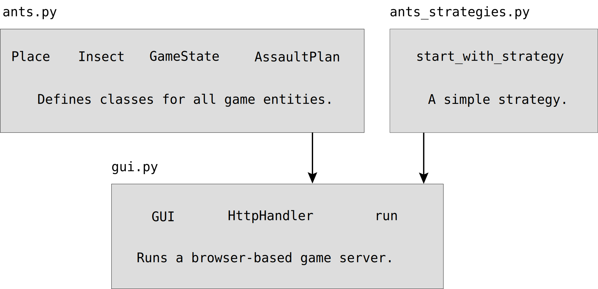
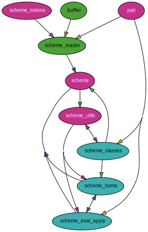
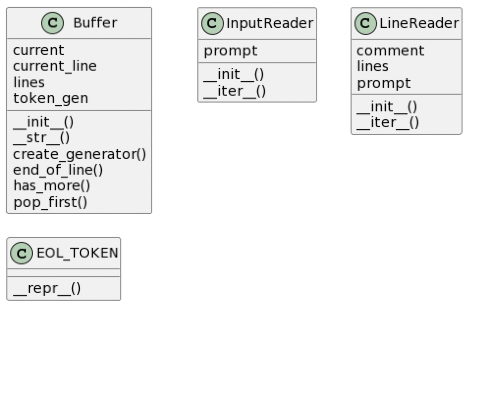
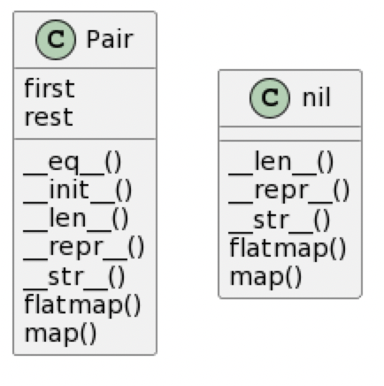
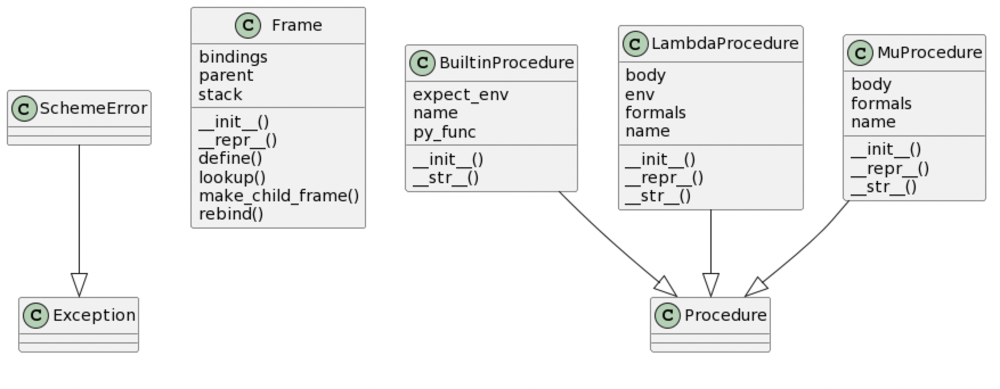

Modularity
- Press O or Escape for overview mode.
- Visit this link for a nice printable version
- Press the copy icon on the upper right of code blocks to copy the code
Class outline:
- Modules
- Packages
- Modularity
- Modular design
Modules
Python modules
A Python module is a file typically containing function or class definitions.
link.py:
class Link:
empty = ()
def __init__(self, first, rest=empty):
assert rest is Link.empty or isinstance(rest, Link)
self.first = first
self.rest = rest
def __repr__(self):
if self.rest:
rest_repr = ', ' + repr(self.rest)
else:
rest_repr = ''
return 'Link(' + repr(self.first) + rest_repr + ')'
def __str__(self):
string = '<'
while self.rest is not Link.empty:
string += str(self.first) + ' '
self = self.rest
return string + str(self.first) + '>'
Importing
Importing a whole module:
import link
ll = link.Link(3, link.Link(4, link.Link(5)))
Importing specific names:
from link import Link
ll = Link(3, Link(4, Link(5)))
Importing all names:
from link import *
ll = Link(3, Link(4, Link(5)))
Importing with alias
I don't recommend aliasing a class or function name:
from link import Link as LL
ll = LL(3, LL(4, LL(5)))
But aliasing a whole module is sometimes okay (and is common in data science):
import numpy as np
b = np.array([(1.5, 2, 3), (4, 5, 6)])
Running a module
This command runs a module:
python module.py
When run like that, Python sets a global variable __name__
to "main". That means you often see code at the bottom of modules like this:
if __name__ == "__main__":
# use the code in the module somehow
The code inside that condition will be executed as well, but only when the module is run directly.
Packages
Python packages
A Python package is a way of bundling multiple related modules together. Popular packages are NumPy and Pillow.
Example package structure:
sound/ Top-level package
__init__.py Initialize the sound package
formats/ Subpackage for file format conversions
__init__.py
wavread.py
wavwrite.py
aiffread.py
aiffwrite.py
auread.py
auwrite.py
...
effects/ Subpackage for sound effects
__init__.py
echo.py
surround.py
reverse.py
...
filters/ Subpackage for filters
__init__.py
equalizer.py
vocoder.py
karaoke.py
...
Importing from a package
Importing a whole path:
import sound.effects.echo
sound.effects.echo.echofilter(input, output, delay=0.7, atten=4)
Importing a module from the path:
from sound.effects import echo
echo.echofilter(input, output, delay=0.7, atten=4)
Installing packages
The Python Package Index is a repository of packages for the Python language.
Once you find a package you like, pip is the standard way to install:
pip install nltk
You may need to use pip3 if your system defaults to Python 2.
Modularity
Modular design
A design principle: Isolate different parts of a program that address different concerns.
A modular component can be developed and tested independently.
Ways to isolate in Python:
- Functions
- Classes
- Modules
- Packages
Hog design
┌─────────────┐ ┌────────────┐
│ hog.py │ │ dice.py │
│ │ │ │
│ Strategies │ │ Dice rolls │
└────┬────────┘ └─────┬──────┘
│ │
│ │
┌────▼────────────────▼─────┐
│ hog_gui.py │
│ │
│ Plays the game │
│ according to rules. │
└───────────────────────────┘
Ants design
See also: Ants class diagram
Scheme design
High-level overview
scheme_reader.py: the reader for Scheme inputpair.py: defines thePairclass and thenilobjectbuffer.py: defines theBufferclass and related classesscheme.py: the interpreter REPLscheme_eval_apply.py: the recursive evaluator for Scheme expressionsscheme_forms.py: evaluation for special formsscheme_classes.py: classes that describe Scheme expressionsscheme_builtins.py: built-in Scheme proceduresscheme_tokens.py: the tokenizer for Scheme inputscheme_utils.py: functions for inspecting Scheme expressions
scheme_reader.py functions
✏️ This is a file you edited in Lab 11!

scheme_read(src)read_tail(src)buffer_input()buffer_lines()read_line()read_print_loop()
buffer.py classes
✏️ This is a file you edited in Lab 11!
pair.py classes
scheme.py functions
read_eval_print_loop(next_line, env)add_builtins(frame, funcs_and_names)create_global_frame()run(*argv)
scheme_eval_apply.py functions
✏️ This is a file you'll be editing!
scheme_eval(expr, env)scheme_apply(procedure, args, enveval_all(expressions, env
Also contains a class and some functions for the EC, tail call optimization.
Unevaluatedclasscomplete_apply(procedure, args, env)optimize_tail_calls(unoptimized_scheme_eval)
scheme_builtins.py functions
scheme_equalpscheme_eqpscheme_pairpscheme_lengthscheme_consscheme_carscheme_cdrscheme_listscheme_appendscheme_addscheme_subscheme_mulscheme_div- etc..
scheme_forms.py functions
✏️ This is a file you'll be editing!
do_define_formdo_quote_formdo_begin_formdo_lambda_formdo_if_formdo_and_formdo_or_formdo_cond_formdo_let_formmake_let_framedo_unquote_formdo_mu_form- etc.
scheme_classes.py classes
✏️ This is a file you'll be editing!
Appendix: Visualization tools
If you'd like to visualize the organization of your projects, try these tools:
- Code2Flow: Visualize the flow of functions (what calls what) in a file.
- PynSource: Generate UML diagrams of Python classes/subclasses.
- PyDeps: Visualize the dependencies (imports) between Python modules.
More tools are mentioned in this blog post.